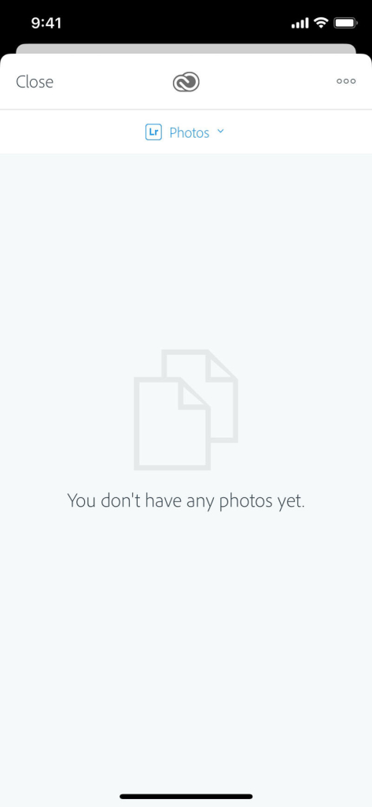
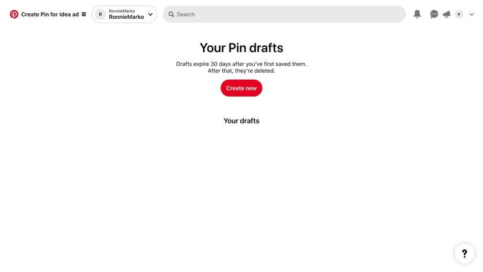
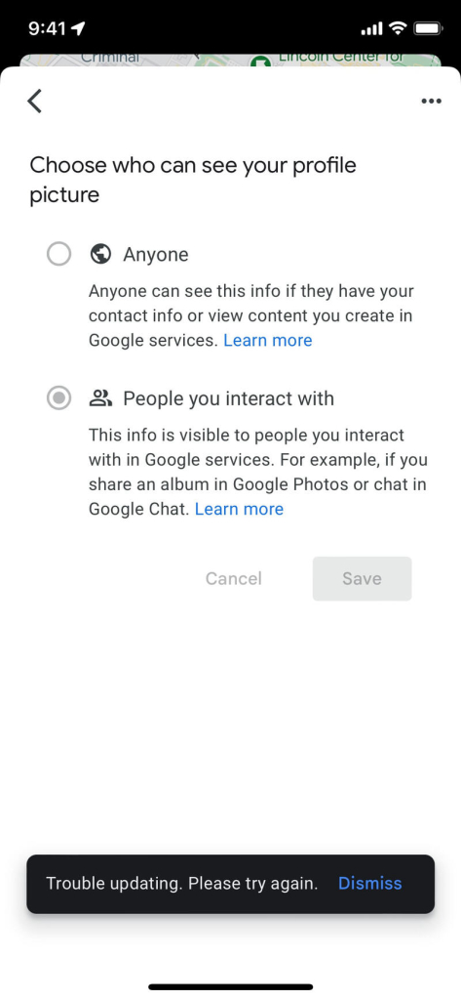
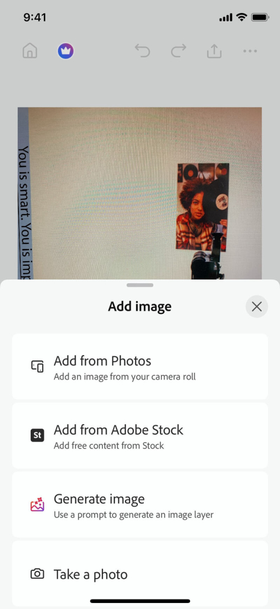
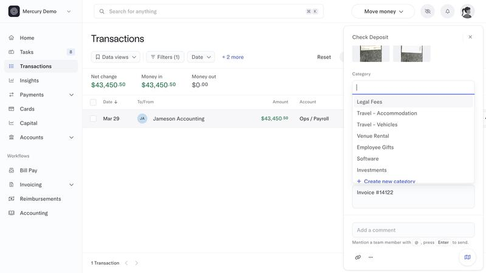

Youth Sports · Miami Hoops · Look only
Parent team photos — privacy-first
A private team vault so roster families can share game-day photos without putting kids on the open web. Empty = one line + one CTA. Consent defaults protective. Group shots with unresolved kids go to coach hold — no face-AI blur in v1.
Refero locks
Copied into refs/. Empty = Photoshop quiet + Pinterest one-line+one-CTA. Consent = Maps radios. Upload = Photoshop add sheet → camera-roll only. Desktop = Mercury light sidebar (APP-DESIGN System 2).





Before → After · phone
Before: Team chrome today has Team / Feed / Film. Film is link cards only. No Photos home; player profile can upload a roster headshot only.


Phone flow · parent


Coach · Held for review
Primary group-shot path: if any tagged kid is Never or unanswered Ask me first, the shot holds here. Auto-blur is out of v1 (no paid face AI). Manual kid tags on upload are the light UX.

Tablet + desktop


Product locks proposed
| # | Lock | Proposal |
|---|---|---|
| 1 | Vault | Team only — roster parents + coaches. No public URL, SEO, share-to-web, or club-wide gallery. |
| 2 | Consent radios | Allow / Ask me first / Never. Default = Ask me first. |
| 3 | Group shots | Hold for coach review if any kid is Never or unanswered Ask. Manual tags OK. No auto-blur v1. |
| 4 | Game-day upload | Event → “Add photos from today” → multi-select camera roll → done. |
| 5 | Engagement | Heart + Save to My kid's album. No comment threads on kid photos. |
| 6 | Report | One tap Hide my kid (instant for reporter) + Tell coach. |
| 7 | Download | Parents save to album/device; no reshare link. Coaches can save for a later season reel (optional strip skipped in this LOOK). |
| 8 | Empty | One line + one primary pill. Never dashed drop hero. |
One thing to settle for Paul
1. Default consent? Proposed: Ask me first (protective). Alternatives: Allow (faster posts) or Never (too hostile for a team album).
2. Who sees the vault? Proposed: Team only (roster parents + coaches). Not whole club. Org staff visibility left for Paul if needed later.
3. Can parents download originals? Proposed: Yes — save to My kid's album / device; no reshare link. Coaches may save for a season reel later.
4. Coach approval before anything shows, or post-then-report? Proposed: Hybrid — Allow kids post through; Ask/Never kids hold for coach. Not universal pre-approval (too slow on game day) and not pure post-then-report for restricted kids.
Out of scope
- Mailbox, Film video hosting, Meta social publish, Stripe
- Face recognition / paid blur vendor
- Any production code or youth-sports-app repo edits
Example data only. Photo tiles are court/ball/jersey gradients and initials — no real kids' faces.
How these shots were made
Self-contained HTML frames under frames/ with Miami Hoops tokens (navy #011441, orange #ef6908, canvas #f7f8fa, Inter + Anton). Captured with playwright-core at 390×844, 820×1180, and 1440×900. Look only — nothing merged, no app PR.